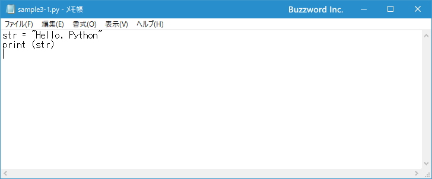
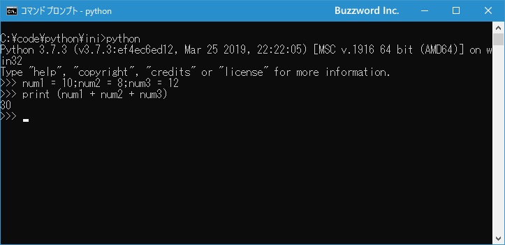
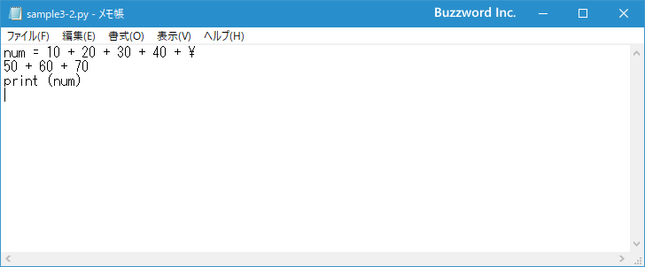
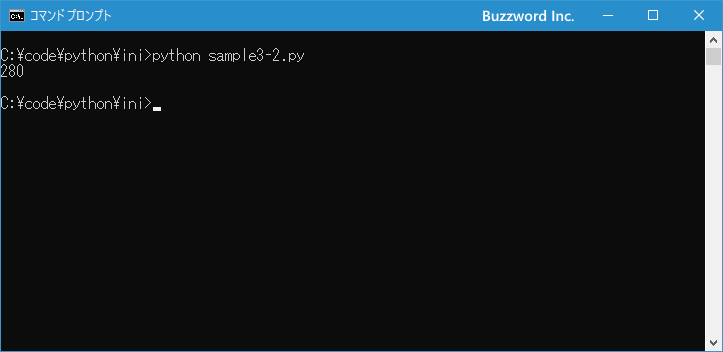

Pythonでの文の区切りと長い文を途中で改行して入力する方法
Python を使ってプログラムを記述する場合に、どこからどこまでが 1 つの文として扱われるのかと説明と、長い文を途中で改行したい場合の方法について解説します。
文の区切りとして改行を使用する
Python では文の区切りとして改行が使用されます。例えば対話モードでスクリプトを入力している時に、改行を行うと文の入力が終了したと判断されて、入力した文が構文的にエラーがないかどうか確認されて実行されます。
例えば変数に値を格納し、その変数の値を出力するようなプログラムで考えてみます。
str = "Hello, Python"
print (str)
最初の文を入力し改行すると、そこまでが 1 つの文として処理されます。
>>> str = "Hello, Python" >>>
次の文を入力し改行すると、そこまでが 1 つの文として処理されます。
>>> str = "Hello, Python" >>> print (str) Hello, Python >>>
このように Python では改行が文の区切りとして利用されます。
-- --
なおファイルにスクリプトを記述する場合も同じです。改行までが 1 つの文なので、文の最後には特に特定の文字を入力する必要はありません。

ファイルに保存したプログラムを実行してみると先ほどと同じ結果となります。
文の区切りとしてセミコロンを使用する
Python ではセミコロン(;)も文の区切り文字として使用することができます。 1 つの行に 1 つの文を記述する場合は先ほど記載した通り改行が文の区切りとして認識されるため、わざわざ文の最後にセミコロンを記述する必要はありません。同じ行に複数の文を記述したい場合などにセミコロンを使用します。
例えば 3 つの変数に数値を格納し、最後に 3 つ変数を加算した結果を画面に表示するプログラムを考えてみます。 1 つの行に 1 つの文を記述する場合は次のようになります。
num1 = 10
num2 = 8
num3 = 12
print (num1 + num2 + num3)
1 つの行に複数の文を含めたい場合は、文の区切りとして改行が使用できないのでセミコロンを記述して次のように記述します。
num1 = 10;num2 = 8;num3 = 12
print (num1 + num2 + num3)
Python を対話モードで起動し、実際に問題ないかどうか確認してみます。

問題なく実行されていることが確認できました。
長い文を途中で改行する
Python では改行が文の区切り文字となっているので、長い文であっても途中で改行してしまうとそこで文が終わりとみなされエラーとなってしまいます。例えば次の例をみてください。
num = 10 + 20 + 30 + 40 + 50 + 60 + 70
print (num)
最初の文が長いので途中で次のように改行してしまうと、そこまでが 1 つの文とみなされて実行されます。この文は構文的に問題があるためエラーとなります。
num = 10 + 20 + 30 + 40 +
実際に対話モードで試してみると、最初の文を入力し改行を行った時点で次のようにエラーが表示されます。
>>> num = 10 + 20 + 30 + 40 +
File "<stdin>", line 1
num = 10 + 20 + 30 + 40 +
^
SyntaxError: invalid syntax
>>>
もし長い文を途中で改行したい場合には改行の前にバックスラッシュ(\)( Windows 環境では円記号)を入力してください。改行で文が終わりではなく次の行へ続いていることを示すことができます。例えば先ほどの例では次のように記述します。
num = 10 + 20 + 30 + 40 + \
50 + 60 + 70
print (num)
実際に対話モードで試してみると、最初の文を入力し改行を行うと今度はエラーとならず、プロンプトが「...」と表示されます。これはまだ文の続きを入力するという意味になります。
>>> num = 10 + 20 + 30 + 40 + \ ...
では残りの文を入力し最後に改行を行ってください。今度は \ がありませんのでそこまでが 1 つの文として処理されて実行されます。
>>> num = 10 + 20 + 30 + 40 + \ ... 50 + 60 + 70 >>>
最後の文を入力すると、変数に格納された値が画面に出力されます。
>>> num = 10 + 20 + 30 + 40 + \ ... 50 + 60 + 70 >>> print (num) 280 >>>
このように Python のスクリプトを記述するときに文の途中で改行する場合は、改行の前に \ を入力してください。
-- --
なおファイルにプログラムを記述する場合も同じです。文の途中で改行を行う場合は \ を記述してください。

ファイルに保存したプログラムを実行してみると先ほどと同じ結果となります。

-- --
Python における文の区切りの扱いと、長い文を途中で改行する場合の方法について解説しました。
( Written by Tatsuo Ikura )

著者 / TATSUO IKURA
初心者～中級者の方を対象としたプログラミング方法や開発環境の構築の解説を行うサイトの運営を行っています。